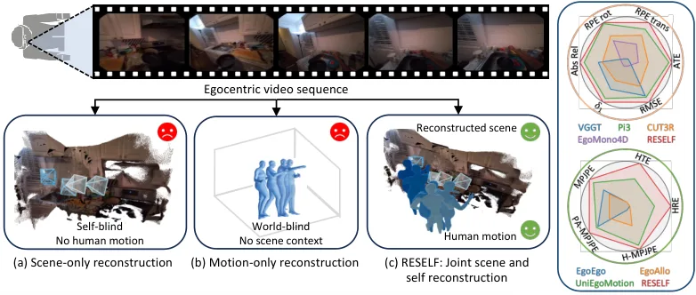
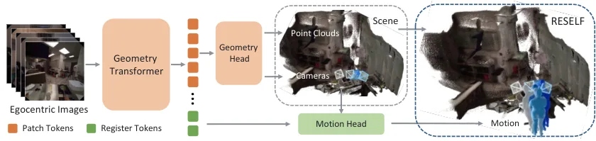
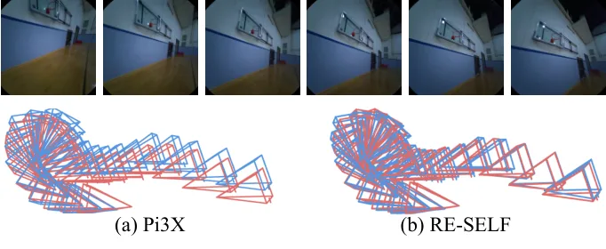
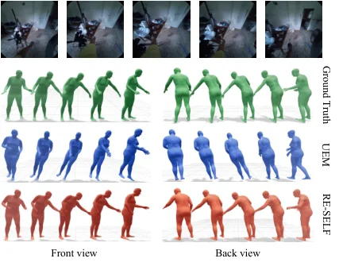
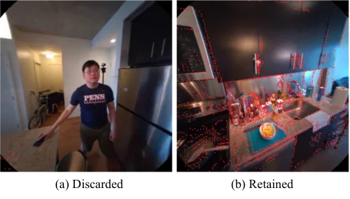
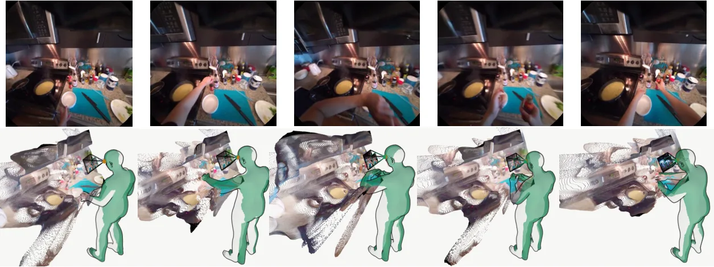

从第一视角视频同时看见世界与自我
Seeing the World and the Self from Egocentric Video
把第一视角的 metric geometry 与严重自遮挡下的身体生成统一起来，形成 world-to-self-to-world 的可微约束链。
作者、单位与技术谱系 · Research context
作者与单位
研究脉络
作者与单位、技术上游和项目入口分开记录；没有公开证据时不推断合作、导师或实验室关系。
方法本质拆解 · What actually changed
训练
RESELF 分三阶段训练：先在 EE4D-JSM 上适配 Pi3X，随后冻结几何模块训练 80 帧条件扩散运动头，最后冻结几何编码器和运动头、只微调相机头。第二阶段使用 350 epochs、12 层 Transformer 和 1,000 步扩散，第三阶段使用 10 epochs 的反馈微调。
约束
逐帧尺度损失约束快速运动下的 metric scale，相邻帧 Huber 平移与旋转 geodesic 损失约束局部 egomotion。运动阶段使用头对齐轨迹和场景 register tokens，反馈阶段以相机损失加运动 MSE 约束 camera head。
推理
推理时由 Pi3X 产生 metric point maps、相机轨迹和几何 latent，再从纯 Gaussian noise 迭代去噪生成 243 维身体序列。运动头保持冻结，只有最终反馈训练会改变 camera head；它不是传统全局 BA，而是经可微轨迹条件传回的局部头部更新。
机制
RESELF 将可见场景交给确定性几何回归，将不可见身体交给条件扩散，再用共享 metric frame 把二者连接。身体运动提供相机轨迹的反向约束，形成“world → self → camera”的闭环，但不重新优化被冻结的场景几何。
输入第一视角 RGB，先以度量几何和相对运动约束稳定相机，再用场景条件扩散补全身体，最后将运动残差通过冻结运动头传回 camera head。

动机与问题Motivation
动机与问题
第一视角相机大部分时间看得见环境，却严重看不见自己的身体，因此确定性几何回归和生成式运动推断具有不对称可见性。问题还包含单目尺度歧义、快速头部运动导致的短期漂移，以及身体运动必须与场景处在同一 metric frame 中。
方法Method
方法总览
系统先把 Pi3X 适配到动态第一视角输入，加入逐帧 metric-scale loss 和相邻帧相对位姿 loss，得到 RESELF-s1。其头对齐相机轨迹和最后两层 register-token 几何特征共同条件化 12 层 Transformer diffusion motion head，最后以冻结的运动头产生梯度，只微调 camera head。
关键技术细节
几何阶段保留 point-map、camera-pose 和 global metric-scale 目标，并加入逐帧尺度损失与 Huber 平移加旋转 geodesic 的 egomotion 损失。运动状态每帧为 243 维，包含 22 个 SMPL-X 关节、增量参考轨迹、双手 PCA、足接触和形状系数；推理从 Gaussian noise 开始执行 1,000 步 cosine denoising。

实验Experiments
实验设置
作者从 EgoExo4D 对齐 Project Aria SLAM 点云、相机轨迹和 SMPL-X 运动，构建 EE4D-JSM，清除 119 条训练与 12 条测试的低有效率序列，保留 16,807 条训练和 5,212 条测试序列，覆盖 18 类活动和 70 多个场景。实验使用两张 NVIDIA H20；指标包括 ATE、RPE-t、RPE-r、Abs-R、深度 RMSE、δ1、MPJPE、PA-MPJPE、H-MPJPE、HTE 和 HRE，对照有 VGGT、CUT3R、Pi3X、EM4D、EgoEgo、EgoAllo 与 UEM。
实验数字与比较
在 similarity alignment 下，RESELF 的 ATE/RPE-t/RPE-r 为 0.012/0.009/0.341，Abs-R、δ1 和 RMSE 为 0.125/86.27/1.530，优于 Pi3X 的 0.016/0.015/0.557 与 0.140/84.78/1.564。绝对尺度协议中，RESELF 相比 Pi3X 将 ATE 从 0.026 降到 0.022、RPE-t 从 0.019 降到 0.010；人体指标中它相对 UEM 将 MPJPE 从 116.1 mm 降到 109.8 mm、H-MPJPE 从 184.2 mm 降到 174.6 mm，HTE 从 65.9 mm 降到 50.1 mm，数字来自官方 HTML 表 1–2。
消融/失败边界
几何消融中，只加入逐帧尺度项时 ATE/RPE-t/RPE-r 为 0.023/0.011/0.357，只加入相对位姿项时为 0.027/0.013/0.466，两者同时加入得到 0.023/0.011/0.355 和更好的深度平衡。去掉轨迹条件后即使保留 RESELF-s1 几何特征，MPJPE 会升到 295.2 mm、H-MPJPE 到 359.8 mm；关闭最终反馈后相机 ATE 为 0.0235，加入反馈降为 0.0217，说明全局运动锚点和闭环反馈分别承担不同作用。
局限与迁移Limitations & Transfer
局限与待核验
作者明确说明 EE4D-JSM 的场景几何来自稀疏 SLAM 点云，并通过 0.01% 有效率阈值清理数据，因此不等同于 dense scene ground truth；代码、模型和数据集也标为后续公开。待核验项包括真实在线推理吞吐、快速非刚性运动、外部几何质量下降时的鲁棒性，以及仅靠单目 RGB 时对相机内参和尺度漂移的长期表现。
与你研究路线的关系
可迁移模块是把 frame-wise scale、relative-pose 和运动学反馈视为不同时间尺度的可靠性因子，而不是把所有误差压进一个总损失。下一步可将相机头的反馈残差、点图置信度和身体观测可见性接入因子图，比较冻结几何加局部反馈、端到端神经 BA 与故障注入下的恢复时间。
{kind=link}

{kind=link}

{kind=link}

{kind=link}
